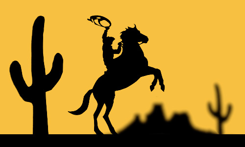
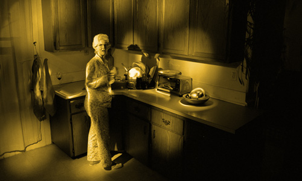

Tufts / SMFA, Boston — MFA Thesis
Cutout Figures Series
A photographic series that reimagines childhood action‑figure narratives through paper cut‑outs while examining the cultural hegemony of American heroism.
View SeriesPhotography Portraiture
Photoshop Retouching
Light first, then pixels: client portraits photographed in the studio with high-end strobe kits, then composited and retouched in Photoshop.
- Tools: Bowens & Calumet, Profoto lighting systems, 4x5-large format/digital format cameras, Photoshop CC

Photography
Posed Encounters Series
A study of iconic cinematic reaction shots, reimagined through camp and noir aesthetics to probe the tension between fear, spectacle, and the sublime.
View Series